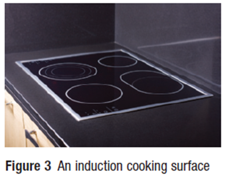
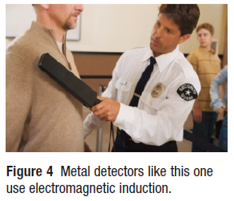
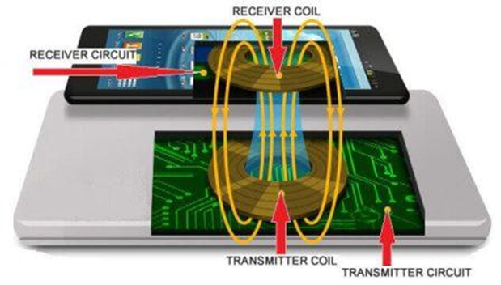

Electromagnetic Induction

Faraday discovered that in order to produce an electric current, the magnetic field needs to be continuously changing. He discovered electromagnetic induction, the production of electric current in a conductor within a changing magnetic field.
Callout
Law of Electromagnetic Induction
The law of electromagnetic induction states that any change in the magnetic field near a conductor induces a voltage in the conductor, causing an induced electric current in the conductor.
In Faraday's investigation, he brought a permanent magnet near a conductor, but not in direct contact with it, and induced a current in the conductor. The electric current was produced only while the magnet was moving in the vicinity of the conductor. We call this an “induced current” because it is not an already existing current; it is formed by the action of the magnetic field moving along the conductor. These observations led Faraday to develop what is now known as the law of electromagnetic induction.
Accordion
Electromagnetic Induction and Faraday’s Ring
Electromagnetic induction can be investigated using a device containing two completely independent circuits. The primary circuit is connected to a source of electrical energy. The secondary circuit is connected only to a galvanometer. Faraday investigated electromagnetic induction using a device that he built himself, the Faraday’s ring.
Factors Affecting Electromagnetic Induction
Several factors determine the amount of electric current that can be produced by electromagnetic induction. Each of the following factors must be considered independently.
Coiled Conductor
The magnetic fields from both sides of the loop interact to produce a more pronounced magnetic field in the center of the loop. Similarly, with electromagnetic induction, a coiled conductor has more induced electric current in it than a straight conductor.
The Number of Loops in the Coil
With electromagnetic induction, the number of loops in the coil is directly proportional to the magnitude of the electric current induced in the conductor for a given change in the magnetic field. So, the greater the number of loops in a coil, the more electric current can be induced for a given change in the magnetic field.
The Rate of Change of the Magnetic Field
There are two cases to consider here: a coiled conductor with a permanent magnet and a Faraday’s ring apparatus. In the first case, A higher rate of change causes a larger induced electric current in the conductor. In the second case, The magnitude of the induced electric current in the secondary circuit is proportional to the rate of change of the magnetic field in the soft-iron ring.
The Strength of the Inducing Magnetic Field
The stronger the inducing magnetic field, the greater the induced electric current. This increases the induced electric current in the secondary circuit.
Applications of Electromagnetic Induction
Tabs
Cooking using an induction cooker involves a rapidly changing magnetic field in the stove element, which induces an electric current in the pot.

Metal detectors use a coil that generates a rapidly changing magnetic field. This induces a current in any metal near it. The induced electric current in the detected metal also produces an induced magnetic field of its own.

Electromagnetic induction can be used to charge low-power electronic devices such as electric toothbrushes, or even cellphones. The charger is plugged into a wall outlet. Both the charger and the device to be charged contain a wire coil.
